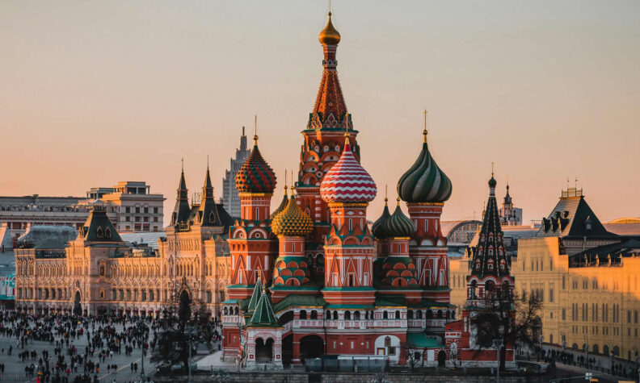

Informações sobre a Rússia
A Rússia é o maior país do mundo e possui uma rica história, cultura diversificada e vastas paisagens que vão desde tundras geladas até florestas densas.
História
A história da Rússia é marcada por uma rica diversidade cultural e eventos significativos, desde a formação do Estado russo até a era soviética e a atualidade.
Principais Cidades
| Cidade | População | Informações |
|---|---|---|
| Moscou | 12.252.023 | Ver mais |
| São Petersburgo | 6.718.903 | Ver mais |
| Novosibirsk | 2.530.701 | Ver mais |